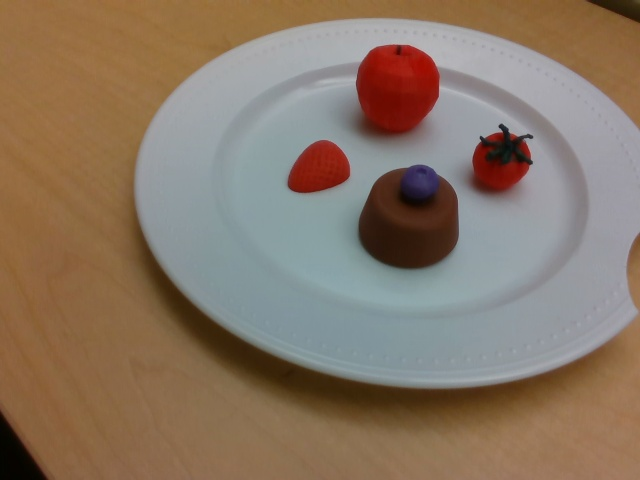
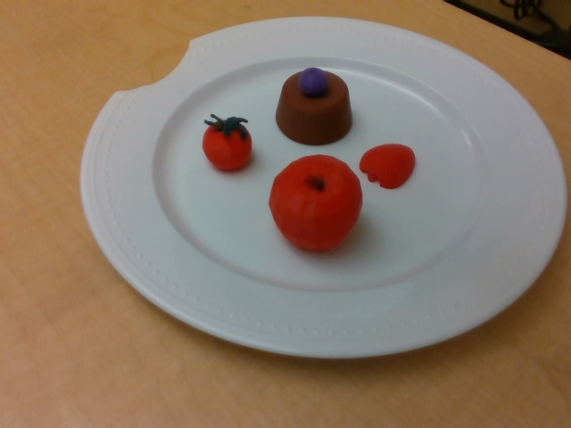

01 Inspection
The robot arm detects the plate and proceeds to orbit around the plate twice, taking multiple photos at different angles throughout the process. The photos are saved to a folder ready for segmentation.
ME C106A · Final Project Report
Culinary plating assistant made with an Intel RealSense camera paired with a UR7e Robotic Arm. Detects, scans, and memorizes plated dishes to replicate on command.


What if a robot could plate a dish as well as a human? Robotic culinary plating requires accurate perception, spatial reasoning, and delicate manipulation. This project presents a robotic culinary plating assistant that uses a UR7e arm with an attached camera to capture a completed dish from multiple viewpoints and reconstruct a 3D model of the plated arrangement. The system identifies food items, estimates their poses relative to varying frames, and generates a pick-and-place plan to recreate the dish. Such a robot would be able to quickly, accurately, and consistently recreate dishes, allowing for shorter waiting times at restaurants.
Our project is split into two different phases: an inspection phase to scan each component on the plate, and an execution phase to begin plating food.
The robot arm detects the plate and proceeds to orbit around the plate twice, taking multiple photos at different angles throughout the process. The photos are saved to a folder ready for segmentation.
The photos during the inspection phase are segmented and approximate positions and orientations for each object on the plate are recorded. Then, upon being presented with various ingredients in view, the robot begins plating.
The pipeline makes use of two ROS2 packages, perception
and planning, with MoveIt providing IK and motion
planning. Click any component below to open its details.
Click a component above to read its details here.
Wrist-mounted depth camera providing aligned RGB, depth, and intrinsics over the standard RealSense ROS 2 topics.
/camera/.../color/image_raw — RGB stream used by YOLO to determine bounding boxes and centroids./camera/.../depth/color/points — This is the pointcloud used detection_node to find the centroid and depths of objects detected with YOLO./camera/.../color/camera_info — intrinsics used by pixel_to_world to calculate the position of objects based on where they appear on the image plane (camera).Note — the camera launch is intentionally external to the bringup so we can restart it without tearing down the planner.
A custom YOLO model was trained on images of 3D-printed food replicas for real-time object detection within the workspace. Done separately from the main design.
Label Studio.updated.pt (fine-tuned) is the primary model; previous models are retained as fallback checkpoints.Note — food wasn't allowed in the lab; existing YOLO models trained on real food couldn't be utilized, requiring us to train one ourselves.
6-DoF Universal Robots UR7e with a parallel gripper. The arm is driven through the scaled_joint_trajectory_controller's FollowJointTrajectory action.
/toggle_gripper Triggers the gripper to open and close. It’s assumed to be open at the startup./joint_states /joint_states is the topic that contains the current joint states in radians. It’s used in the IK solver, armcircler, and the pick and place.The main perception node. Runs YOLOv8 on every RGB frame, lifts each bbox into a 3D centroid through the depth pointcloud, and publishes the result in base_link.
YOLODetector.detect() returns class IDs, confidence, bbox, and 2D center.get_centroid_from_cloud_bbox() reprojects every cloud point into image coords, keeps the ones inside the bbox, and averages them.transform_point() resolves camera_link → base_link via the static TF + UR kinematic chain.plate_radius = 0.14 m of the latest plate centroid is rejected./detected_pick_point; plate always published on /detected_plate_point.Topic ordering matters — /detected_class must arrive before /detected_pick_point, otherwise per-class offsets silently fall back to defaults.
Thin stateless wrapper around Ultralytics YOLOv8. detect(image) returns a list of {class_id, class_name, confidence, bbox, center} dicts.
updated.pt (fine-tuned) is the default; best.pt and yolov8n.pt are kept as fallbacks.conf_threshold parameter on DetectionNode (default 0.5).Helper module that converts 2D detections into 3D centroids in base_link.
get_centroid_from_cloud_bbox() — projects every depth point into camera image coords, averages the ones inside the YOLO bbox.transform_point() — TF lookup chained from camera_link through the static TF and the UR kinematic chain.PointStamped in base_link, ready for IK.The ArmCircler node is responsible for executing a sequence of joint trajectories using an action client and taking pictures at each waypoint. It uses the FollowJointTrajectory action type, which handles trajectory goals, feedback, and results.
poses.npy ([x,y,z,qx,qy,qz,qw]).captured_images/.True boolean value to the commander node to signify orbit completion.rot_z · rot_y · rot_x always points the camera at the plate.These frames are captured as a multi-view orbit around the plate, with representative shots taken at key points such as frames 1, 15, and 30, and can be seen below. Each image is stored in captured_images/ and used downstream by the segmentation and triangulation pipeline.



Why orbit? Single-frame depth centroids degrade near the edge of the camera frame. Forty one views give the offline pipeline enough parallax for stable triangulation.
Runs in a separate terminal so the user can still enter inputs without interrupting the code. On /orbit_done it runs the segmentation node, then the pose reconstruction node, and then sends the estimated positions of the foods to the pick and place node to plate the dish.
segmented/<stem>/<stem>_<class>_<i>_mask.png.results/object_poses.npy with one position_base_link_m per object from the 6D pose node. The commander node then loads those positions and filters out the ones that aren’t confident enough./start_pick_place to the pick and place node, which tells it to begin pick and place. The commander node sorts the list of objects and postions based on the z height and sends them to the pick and place node under the topic /planned_pick_tasks, where the placement begins.Position-only mode: depth is estimated from apparent mask radius (z = fx · (d/2) / rpx)
Given a set of images of the scene, corresponding masks for each object, CAD files describing each object, and transformation matrices for each camera angle, the Poses Node returns the position and optionally orientation of each object in the scene relative to the base link.
When only solving for position, the node implements a Weighted DLT triangulation algorithm with RANSAC for outlier rejection.
When also solving for orientation, the node implements DINOv2 ViT-S/14 feature matching, iterative render-and-compare using Chamfer edge distance, and RANSAC for outlier removal.
Once segmentation and position estimation are complete, the commander node
waits for user input before beginning pick and place. After the user presses
Enter, the commander node sends a JSON-encoded list containing the
sorted objects and their estimated positions to main.py (the
pick-and-place node), and execution begins.
The pick-and-place pipeline is organized as a state machine that manages the
busy semaphore, the job_queue, and the full grasp
sequence. Every arm motion is executed asynchronously through trajectory
actions, while gripper commands are handled synchronously through service
calls. The node uses the same action design as the arm circler to fill
a queue of joint trajectories and execute them sequentially.
All operations begin from the observation frame. After arm circler finishes and the user proceeds with pick and place, the arm moves to the observation frame before starting the first cycle. After every pick and place operation, the arm returns to this pose so the camera can view the entire workspace and recalculate object positions. Re-observing the workspace prevents error buildup that would occur if the arm relied only on predetermined coordinates.
(cx, cy, cz + 0.5) so the camera can observe the object from
a centered viewpoint, reducing fisheye distortion.
PICK_OFFSETS configuration for the detected object class.
(plate_x, plate_y, drop_z + 0.20), descends using hardcoded
z and y offsets, releases the object, and
retracts upward. The z-offset compensates for imperfect table-depth
estimation and gripper height, while the y-offset improves lateral
placement alignment.
_going_home clears
busy once the arm settles at the observation frame, allowing
the next pick cycle to begin safely. This repeats until no objects remain
in the task list and the module declares the process complete.
| Class | x | y | pre_grasp_z | grasp_z | lift_z |
|---|---|---|---|---|---|
| apple | 0.01 | 0.005 | 0.16 | 0.125 | 0.185 |
| tomato | 0.015 | 0.005 | 0.16 | 0.14 | 0.185 |
| cake | 0.02 | 0.005 | 0.20 | 0.15 | 0.20 |
| strawberry | 0.02 | 0.005 | 0.20 | 0.14 | 0.20 |
| default | 0.02 | 0.005 | 0.16 | 0.14 | 0.185 |
The pipeline uses boolean state flags to coordinate perception, trajectory execution, and grasp planning. These flags prevent overlapping commands and ensure the robot only reacts to detections when it is in a safe observation state.
| Flag | Purpose |
|---|---|
busy |
Indicates that the arm is currently moving or an active pick cycle is running. New detections are ignored until the arm returns home or a trajectory failure occurs. |
_refining |
Enabled while the arm moves toward the pre-pregrasp pose. During this phase, live detections are temporarily suppressed until refined centroid estimation is completed. |
_at_pre_pregrasp |
Signals that the arm has reached the pre-pregrasp waypoint and that refined centroid detection should begin. |
_going_home |
Indicates that the home waypoint is currently queued or the arm is actively returning to the observation frame. |
pick_place_enabled |
Enables the full pick-and-place pipeline after activation from the commander node. |
_pick_triggered |
Prevents duplicate pick attempts by ensuring only one live detection can trigger a pick operation at a time. |
Detection filtering: The detection node filters out objects within a specified radius of the plate so the pick-and-place node does not attempt to pick foods that have already been placed.
Refined centroid calculation: Recalculating the centroid
from 0.5 m above the object produces more stable measurements by reducing
fisheye distortion and handling partially visible objects. The
PICK_OFFSETS per-class adjustments can then be applied
consistently across all pick cycles.
Wraps the two MoveIt services we actually need: GetPositionIK and GetMotionPlan. GetPositionIK is a MoveIt service that computes the inverse kinematics for a specific point in 3D space, and GetMotionPlan makes sure that this trajectory is safe.
/compute_ik — Cartesian target → joint solution. Input is the current joint states and the desired position and rotation as a quaternion. The position and rotation pertain to the end effector frame “tool0”./plan_kinematic_path — uses Rapidly-exploring Random Tree (RRT) to find a joint trajectory that is feasible and avoid collisions.Broadcasts the constant wrist_3_link → camera_link transform as a homogenous transformation 4×4 matrix G.
This is the bridge between the realsense camera and the ur7e robot. It allows the robot arm to plan waypoints with the camera’s position in mind (i.e. armcircler).
Provides the two services the executor depends on:
/compute_ik — used at every Cartesian waypoint./plan_kinematic_path — RRTConnect plans between joint configurations, executed through FollowJointTrajectory.RViz is launched alongside it for live visual debugging of trajectories.
Each object is individually segmented, even when stacked on top of each other.
1st image is the original plate, 2nd image is the recreated plate.
End-to-end demo run — orbit inspection → segmentation → pick-and-place sequence.
Overall, the project was successful in accordance to our original proposal. With our computer vision and placement for rigid objects working, we firmly believe our project can continue to evolve for even more complex culinary situations. While the video demonstration was long in duration, in practical use, the robot will only need to scan a dish once. After that, the robot can recreate that dish as many times as necessary.
Throughout the project creation process, ChatGPT, Gemini, and Claude Code were used in supporting roles for debugging, code integration, logic design, and website development.
Although we were able to independently resolve most issues, several sections of the codebase contained logical errors, particularly during integration of the UR7e arm. These issues often resulted in unintended robot behavior or runtime errors that prevented execution. AI was used to suggest edits, including adding, removing, and modifying lines of code to resolve these bugs efficiently.
The project was developed in modular components (arm circling, bounding boxes, pixel masking, etc), allowing parallel development across team members. However, while each module functioned independently, integrating them into a unified system often resulted in code that would often fail after minor adjustments. AI was used to consolidate these components into a cohesive pipeline, including merging scripts and restructuring packages, to allow the packagers to work together.
Although the intended system behavior was well understood, AI was used to assist in translating high-level ideas into implementation details. This included generating pseudocode, as well as adjusting logic as necessary to allow the pipeline to work as intended.
The formatting, layout, and visual design of this website were assisted using AI tools. However, all content—test descriptions, images, and images— were manually created and curated.
The Lab 5 starter code was used as the baseline for portions of this project.